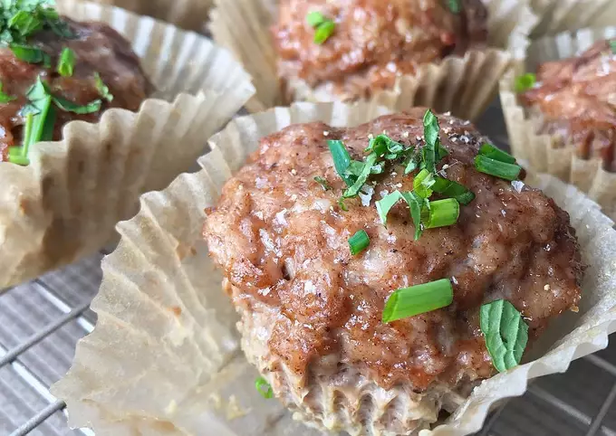

Maca Sausage Muffins

These muffins are made out of meat!
Ingredients:
- 1.5 lbs ground pork
- 1/4 cup maple syrup
- 1 TBSP maca powder
- 1 TBSP cinnamon
- 1 TBSP nutmeg
- 1 egg
- 1/2 tsp salt
Steps:
- Mix all ingredients in a large mixing bowl.
- Add mixture to muffin tins.
- Bake at 350 degrees for 15-20 minutes.
- Let cool for 10 minutes.